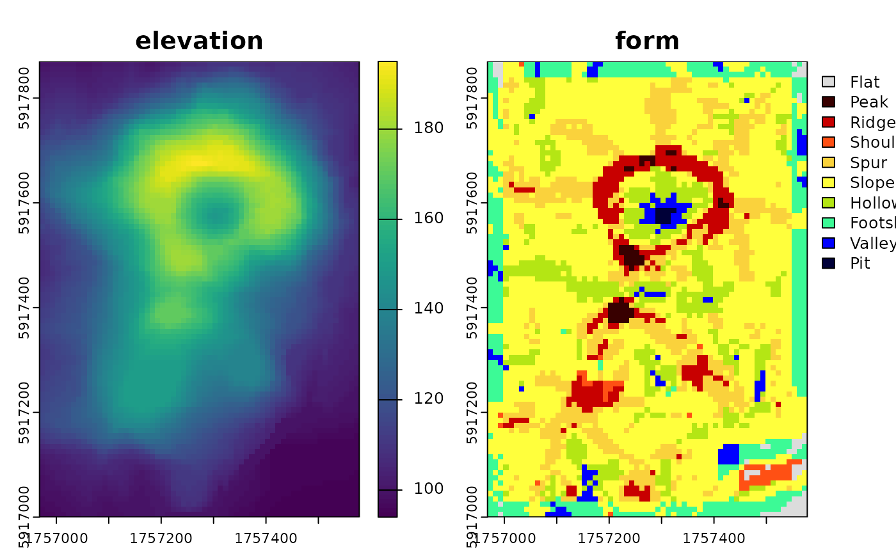

Parallel implementation of the 'geomorphon' terrain classification algorithm largely based on 'r.geomorphon' algorithm of Jasiewicz and Stepinski (2013) from 'GRASS GIS'.
Usage
geomorphons(
elevation,
search = 3,
skip = 0,
flat_angle_deg = 1,
dist = 0,
comparison_mode = "anglev1",
tdist = 0,
forms = TRUE,
ternary = FALSE,
positive = FALSE,
negative = FALSE,
use_meters = FALSE,
nodata_val = NA_real_,
xres = NULL,
yres = xres,
simplify = FALSE
)Arguments
- elevation
matrix or SpatRaster object. Digital Elevation Model values. It is STRONGLY recommended to use a grid in a projected coordinate system.
- search
numeric. User input for search radius (default:
3). Units depend onuse_meters.- skip
numeric. User input for skip radius (default:
0). Units depend onuse_meters.- flat_angle_deg
numeric. Flatness angle threshold in degrees. Default:
1.0.- dist
numeric. Flatness distance (default:
0). Units depend onuse_meters.- comparison_mode
Character. One of
"anglev1","anglev2","anglev2_distance". Default:"anglev1".- tdist
numeric. Terrain distance factor. When greater than 0, overrides Z tolerance from angular logic. Default:
0.0.- forms
Character. Number of geomorphon forms to identify. One of
"forms10(default),"forms6","forms5", or"forms4.- ternary
Logical. Include "ternary" output? Default:
FALSE- positive
Logical. Include "positive" output? Default:
FALSE- negative
Logical. Include "negative" output? Default:
FALSE- use_meters
Logical. Default:
FALSEuses cell units. Set toTRUEto specifysearch,skip, anddistin units of meters.- nodata_val
numeric. NODATA value. Default:
NA_real_.- xres
numeric. X grid resolution (used only when
elevationis a matrix). Default:NULL.- yres
numeric. Y grid resolution (used only when
elevationis a matrix). Default:xres.- simplify
Logical. If result is length
1list, the first element is returned. Default:FALSE
Value
List of SpatRaster or matrix of geomorphon algorithm outputs. When
more than one of forms, ternary, positive, negative are set the
result is a list. For one result type, and default simplify argument, the
result is the first (and only) element of the list.
Details
The algorithm assumes planar distances and angles are calculated based on cell resolutions, so it is strongly recommended that elevation data be in a projected coordinate system.
For reliable geomorphon classification, especially near study area
boundaries, it is recommended to use a raster that includes a buffer of at
least search + 1 cells around the area of interest. This implementation
utilizes all available DEM data up to the specified search radius or the
boundary (whichever is encountered first).
This implementation achieves very high agreement with the classification logic of GRASS GIS 'r.geomorphon' when using equivalent parameters and data in a projected coordinate system.
'r.geomorphon' employs a row buffering strategy which can, for cells near the edges of a raster, result in a truncated line-of-sight compared to the full raster extent. This may lead GRASS to classify edge-region cells differently or as NODATA where this implementation may produce a more 'valid' geomorphon form given the available data.
More information about the 'r.geomorphon' module can be found in the GRASS GIS manual: https://grass.osgeo.org/grass-stable/manuals/r.geomorphon.html
References
Stepinski, T., Jasiewicz, J., 2011, Geomorphons - a new approach to classification of landform, in : Eds: Hengl, T., Evans, I.S., Wilson, J.P., and Gould, M., Proceedings of Geomorphometry 2011, Redlands, 109-112. Available online: https://www.geomorphometry.org/uploads/pdf/pdf2011/StepinskiJasiewicz2011geomorphometry.pdf
Jasiewicz, J., Stepinski, T., 2013, Geomorphons - a pattern recognition approach to classification and mapping of landforms, Geomorphology, vol. 182, 147-156. (doi:10.1016/j.geomorph.2012.11.005 )
Examples
library(terra)
library(rgeomorphon)
SEARCH = 7 # outer search radius (cells)
SKIP = 1 # inner skip radius (cells)
DIST = 0 # flatness distance (cells)
FLAT = 1 # flat angle threshold
MODE = "anglev1" # comparison mode
## classic volcano
data("volcano", package = "datasets")
dem <- terra::rast(volcano)
terra::crs(dem) <- terra::crs("EPSG:2193")
terra::ext(dem) <- c(1756968, 1757578, 5917000, 5917870)
names(dem) <- "elevation"
system.time({
rg <- geomorphons(
dem,
search = SEARCH,
skip = SKIP,
dist = DIST,
flat = FLAT,
comparison_mode = MODE
)
})
#> user system elapsed
#> 0.031 0.003 0.026
plot(c(dem, rg))
